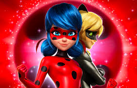
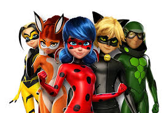
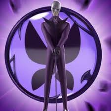

MIRACULOUS
Marinette est une adolescente de 14 ans, créative, gentille, mais aussi un peu maladroite. Elle vit à Paris avec ses parents, qui tiennent une boulangerie-pâtisserie. Marinette est secrètement amoureuse d'Adrien, mais elle n'arrive jamais à lui avouer ses sentiments. En tant que Ladybug, elle est courageuse, responsable et fait preuve d'une grande intelligence tactique. Son rôle est de protéger Paris des menaces, et elle utilise son pouvoir de la chance pour vaincre ses ennemis.Mon objectif : sécuriser vos infrastructures

L'histoire de Miraculous (Miraculous: Les Aventures de Ladybug et Chat Noir) se déroule à Paris, où deux adolescents, Marinette Dupain-Cheng et Adrien Agreste, se transforment en super-héros pour protéger la ville des forces du mal.Marinette devient Ladybug, une super-héroïne dotée d'un pouvoir magique accordé par le Miraculous du coccinelle, tandis qu'Adrien se transforme en Chat Noir, un super-héros possédant les pouvoirs du Miraculous du chat. Ces pouvoirs sont offerts par deux créatures magiques, le Kwami Tikki (pour Ladybug) et Plagg (pour Chat Noir), qui vivent à l'intérieur des Miraculous (des bijoux magiques).Leurs principaux ennemis sont Hawk Moth et ses Akumas, des créatures maléfiques qui transforment les gens en super-vilains en exploitant leurs émotions négatives.

Hawk Moth, qui cherche à obtenir les Miraculous de Ladybug et Chat Noir pour un but mystérieux, reste une menace constante..
Un des aspects intéressants de l'histoire est que, bien que Ladybug et Chat Noir travaillent ensemble pour combattre Hawk Moth et ses minions, ils ne connaissent pas l'identité secrète de l'autre. Marinette est amoureuse d'Adrien, mais ignore qu'il est Chat Noir, et Adrien est secrètement amoureux de Ladybug, sans savoir que c'est Marinette.L’histoire combine des éléments de super-héros, de romance, et de comédie, tout en mettant en avant des thèmes comme la responsabilité, l’amitié, et le courage face à l’adversité.
"Miraculous" est donc un mélange de super-héros, romance, comédie et aventure, tout en offrant un peu de mystère autour des personnages et de leurs objectifs personnels.

L'origine des Miraculous est liée à une ancienne légende, selon laquelle ils ont été créés par un être puissant appelé Maître Fu, le Gardien des Miraculous. Les Miraculous ont été confiés à des héros dans le passé pour protéger l'humanité contre des forces malveillantes. Les pouvoirs des Miraculous sont reliés à des créatures magiques appelées Kwamis, chacune ayant des pouvoirs uniques.
Les Miraculous étaient autrefois utilisés par de nombreux héros pour maintenir l'équilibre dans le monde. Cependant, un grand mal, sous la forme de Hawk Moth (ou Papillon en français), cherche à les obtenir pour accomplir ses objectifs personnels et plonger le monde dans le chaos. Il est le principal antagoniste de la série et utilise ses propres pouvoirs pour transformer des gens en super-vilains grâce à des objets appelés Akumas (des papillons magiques).
Le conflit central de la série tourne autour de l'affrontement entre Ladybug et Chat Noir d'une part, et le super-vilain Papillon d'autre part. Papillon cherche à dérober les Miraculous de Ladybug et de Chat Noir pour obtenir un pouvoir ultime, mais il doit d'abord faire tomber nos deux héros.Marinette et Adrien ne savent pas qui se cache sous les masques de l'autre, ce qui ajoute une dynamique de tension, de secret et de romance dans l'intrigue.